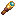
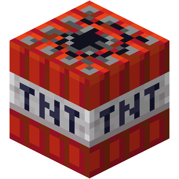
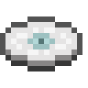
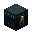
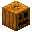
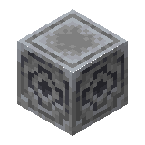
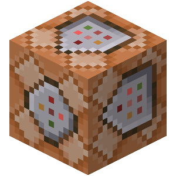
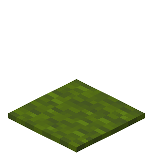
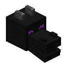
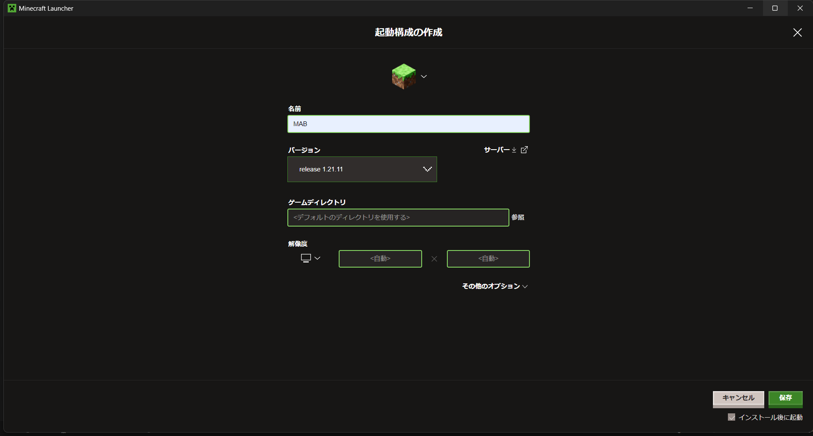

更新履歴
- [2026.11.12] MAB_ver.3.2.0を公開しました(「電脳」「化合」「錬成」「静刻」「混沌」「喪失」の追加, 新たな「マーケットアイテム」の追加, その他バグ修正とWikiの文章表現の添削と統一)
- [2026.11.03] MAB_ver.3.1.0を公開しました(「隠密」「再生」「吸血」「決闘」「削除」「聖域」「念視」「採掘」「召喚」「海賊」「魔術」の仕様変更,一部の「マーケットアイテム」の価格および仕様変更,「回線落ち脱落者の復帰システム」の追加)
- [2026.10.17] MAB_ver.2.4.0を公開しました(「シゴロ賽」を除く全ての「マーケットアイテム」の仕様または見た目の修正,新しい「マーケットアイテム」の追加,「跳弾」の追加,「誘弾」の追加,「磁界」の追加,「収縮コンパス」の削除)
- [2026.10.11] MAB_ver.2.3.0を公開しました(一部「マーケットアイテム」のバグ修正,「戦績（リザルト）システム」の追加)
- [2026.10.01] 祝！サーバー公開1カ月！
MAB_ver.2.0.0を公開しました(「聴牌」の追加,「特殊異能システム」の追加,「分析」の強化, テクスチャファイルの更新) - [2026.09.01] サーバーWikiを公開しました。
はじめに
このサイトは、東野琉之介が考案・開発したマインクラフトの自作プラグインと、それを導入したマルチプレイゲームサーバーである
【麻雀同好会異能力戦線：MAB】の公式Wikiです。
このゲームはルールや能力の詳細な仕様を、文章量・情報量削減のためにゲーム内で確認できないよう省略しています。
したがって「MAB」をプレイする前やプレイ中などに、この公式Wikiを確認することを強くお勧めします。
また、ルールや能力の仕様はアップデートにより予告なく変更されることが多いため「更新履歴」を確認しておくこともお勧めします。
(P.S. 実はこのサイトには小ネタが仕組んであります。暇なときにでも探してみてネ)
動機・目的
麻雀同好会と遊んでいたレンタルマイクラマルチサーバーの期限が切れてから数カ月が経ったとき。
「メンバーと通話しながら気軽にみんなで遊べるゲームが欲しいな～」と常々思っていた僕は、どうせならプログラミングの知識を活かして「マインクラフトで、異能バトル漫画風なバトロワゲームの自作プラグインを作ればおもろいのでは？」
と思い立ち、制作を進めていくことを決めました。
そこから、マイクラ公式の大規模アプデに振り回されたり、そもそも学生生活が忙しすぎたりなど紆余曲折を経て、生成AIフル活用により正式実装レベルにまでこぎつけることができました。
（Special Thanks：良きデバッグテストプレイヤー「かえるこうはい」）
コンセプト
このゲームのコンセプトは「弓 × 異能 × バトロワ」のマイクラプラグイン。
お互いの持つ異能を駆使しながら、弓矢でヘルスを削り合い、最後の1人になるまで生き残るバトロワサーバーです。
ただ、麻雀同好会はメンバーが自分を含めて最大でも5人であるため、異能を駆使したバトロワを十分に楽しめつつ、1ゲームはそこまで長引かないようなカジュアルなゲームシステムを目指しました。
（ちなみに、ゲームタイトルは「麻雀同好会異能力戦線」の英名である「Mahjang-club Ability Battle-royale」の頭文字をとって「MAB」としている。 少人数の仲間内だけで遊ぶゲームということで、「仲のいい友達」という意味のマブと音が一緒であり、かつ非常にシンプルなネーミングなのでプログラミング的にも記述コストが低くお気に入り）
異能（アビリティ）データ一覧
用語説明：
【No.】：・内部処理に必要な異能固有のナンバリング。
・たいていは東野琉之介が異能の「熟語」と「パッシブ」「アクティブ」の原案を決定した順番に数字が振られており、特に深い意味はない。
【異能名】：
・その異能の異能効果に表現するような「二字熟語」が割り当てられている。
・どんな効果か想像できて(主観)、奇を衒いすぎずシンプルで(主観)、それでいてカッコいい熟語(超主観)という基準に基づいて命名されている。
【パッシブ】：
・「パッシブ」は一般に、その異能力者が何かしら特定の操作を行わずとも、常に発動することのできる能力のことをさす。
・異能によっては必ずしも常に発動するわけではない。
【アクティブ】：
・「アクティブ」は一般に、その異能力者が何かしら特定の操作を行うことで、任意に発動することのできる能力のことをさす。
・多くの場合「アクティブ」の能力にはクールダウンが発生する。
・異能によっては必ずしも任意に発動するわけではない。
No.01 【疾風】
- 常に移動速度が通常の1.5倍になる。
- 移動している間、1秒毎に「疾風ゲージ」が1増える。
- 移動していない間、1秒毎に「疾風ゲージ」が1減る。
- 他プレイヤーに矢または近接でダメージを与える毎に、「疾風ゲージ」が2増える。
- 「疾風ゲージ」は最大15まで増える。
- 自身が放った矢は、自身の動きに流されず、照準どおりに真っ直ぐ飛ぶ。
- 移動しながら放った矢は、通常の1.25倍の速さで飛ぶ。
- 「疾風ゲージ」が15になると、「颯(ハヤテ)」を纏う。
- 「颯」を纏っている間、一度だけ被ダメージを0にする。
- 一度被ダメージを受けると「颯」は解除され、「疾風ゲージ」が5に戻る。
No.02 【浮遊】
- 常に跳躍力が通常の2倍になる。
- 空中でジャンプキーを押すと、さらに飛び上がる。
- 再度「スカイウォーク」を発動するには、一度地面に着地する必要がある。
No.03 【転移】
- 「テレポートビーコン」を所持している。
- 1ゲームに一度だけ、致命の一撃を受けても、体力がハート0.5個分で踏みとどまる。
- 踏みとどまると、収縮エリア外を除いたバトルフィールド上のランダムな座標へ転送される。
- しゃがみながら矢を放つと、その着弾地点にテレポートする。
- 「テレポートビーコン」をしゃがみながら使用すると、自身の足元に「ビーコン」を設置する。
- 「テレポートビーコン」を使用すると、設置した「ビーコン」の位置にテレポートする。
- 「ビーコン」の位置にテレポートしてから、再度テレポートできるまで30秒間のクールダウンが発生する。
- 「ビーコン」は1つまで設置でき、再度設置すると以前の「ビーコン」は消滅する。
- 「ビーコン」は、テレポートしても消滅しない。
- 「ビーコン」は、「転移」の異能力者にしか見えない。
- 画面右側に、「ビーコン」のある方角と距離が表示される。
- 収縮エリア外には「ビーコン」を設置できず、収縮エリア外に出た「ビーコン」は消滅する。
- テレポートしてから3秒以内に、矢または近接で他プレイヤーに与える最初の一撃が「奇襲」となる。
- 「奇襲」の与ダメージは、通常の1.5倍になる。
- 「奇襲」が発動してから、再度発動できるまで10秒間のクールダウンが発生する。
No.04 【隠密】
- メインハンドに何も持っていないとき、完全に透明化する。
- 完全に透明化している間は、近接での与ダメージが0になる。
- 完全に透明化している間、15ブロック以内に他プレイヤーがいると、自身の体から黒い煙が立ちのぼる。
- 黒い煙は、全てのプレイヤーから見える。
- しゃがみながら放った矢でダメージを与えると、その他プレイヤーに2秒間の盲目を付与する。
- 発動してから、再度発動できるまで8秒間のクールダウンが発生する。
No.05
【再生】

- 2秒毎に、ハート0.5個分の自動回復が付与される。
- 「包帯」「医療キット」「輸血パック」を使用することができない。
- 致命の一撃を受けても、体力がハート0.5個分で踏みとどまる。
- 踏みとどまると、収縮エリア外を除いたバトルフィールド上のランダムな座標へ転送される。
- 同時に、体力が即時全回復する。
- 「リバイブ」が発動してから、再度発動できるまで300秒間のクールダウンが発生する。
No.06
【精密】

- 放った矢は、速度を保ったまま重力を無視して直進する。
- 放った矢は、10秒で消滅する。
- 弓を構えながら5秒間しゃがみ続けると、「チャージショット」を放てる。
- 「チャージショット」は即着弾で、与ダメージはハート3個分である。
- 「チャージショット」の射程距離は100ブロックである。
No.07 【分析】
- 画面右側に、自身から最も近い他プレイヤーの情報が常に表示される。
- 表示されるのは、「名前」「異能名」「現在体力」「自身からの距離」である。
- 「罠師」の異能力者が仕掛けた「罠チェスト」「偽チェスト」「トラバサミ」が、「罠師」の異能力者と同じ目印で見分けられる。
No.08 【勇者】
- 「聖剣」を所持している。
- 矢の与ダメージが通常の0.5倍になる。
- 「聖剣」による近接の与ダメージが通常の4.0倍になる。
- 他プレイヤーを「聖剣」で倒すと、体力が即時全回復する。
- 他プレイヤーを倒したことがある相手には、「聖剣」の与ダメージがさらに2.0倍になる。
No.09 【吸血】
- 「ヴァンパイアファング」を所持している。
- しゃがみながら放った矢でダメージを与える毎に、その他プレイヤーの体力の最大値をハート1個分奪う。
- 奪った分だけ、自身の体力の最大値が増える。
- 奪って増やせる体力の最大値は、「注射器」などと合わせてハート20個分までである。
- 他プレイヤーの体力の最大値は、ハート5個分より少なくならない。
- 奪われた体力の最大値は、ゲーム中元に戻らない。
- 「逆境」の異能力者からは奪えない。
- 「ヴァンパイアファング」を使用すると、「変身状態」になる。
- 変身した時点で、体力の最大値がハート1個分減り、体力が即時全回復する。
- 体力の最大値がハート2個分より少ないときは、変身できない。
- 「変身状態」では、移動速度と跳躍力が通常の2倍になる。
- 「変身状態」では、近接での与ダメージがハート1個分になる。
- 「変身状態」では、エリトラを自動的に装備する。
- 「変身状態」に時間制限はなく、再度「ヴァンパイアファング」を使用すると解除できる。
- 「変身状態」の間、3秒毎に体力の最大値がハート1個分減っていく。
- 体力の最大値がハート1個分になると、「変身状態」は強制的に解除される。
- 減った体力の最大値は、解除しても元に戻らない。
- 「変身状態」を解除してから、再度使用できるまで33秒間のクールダウンが発生する。
No.10
【爆破】

- 放った矢が赤色に発光する。
- 矢の与ダメージが通常の1.5倍になる。
- しゃがむ毎に足元で爆発を起こし、目線の方向へ推進力を得る。
- しゃがむ毎に、自身はハート0.5個分のダメージを受ける。
- しゃがむと、刺さっている赤色の矢も爆発する。
- 赤色の矢の爆発は、矢から半径3ブロック以内にハート0.5個分のダメージを与える。
No.11 【決闘】
- 「デュエル・フィールド」にいる全てのプレイヤーの体力の最大値を、ハート5個分に固定する。
- 「デュエル・フィールド」にいる間、そこにいる全てのプレイヤーの全ての異能効果を無効化する。
- ただし「パッシブ：正々堂々」は無効化されない。
- 転送される前に受けていた盲目・透明化・行動不能・足止めなどの効果は、転送された時点で消える。
- ただし「アドレナリン」と「ゾーンエネルギー」の効果は消えない。
- 「デュエル・フィールド」にいる全てのプレイヤーの所持アイテムを、一時的に預かる。
- 他プレイヤーを倒して帰還したプレイヤーには、預かっていたアイテムを全て返す。
- 倒されて帰還したプレイヤーには、預かっていたアイテムのうち、弓・矢・異能の専用アイテムだけを返す。
- 倒されたプレイヤーのそれ以外のアイテムは、倒したプレイヤーに与える。
- 倒したプレイヤーの所持品に入りきらなかったアイテムは、倒されたプレイヤーに返す。
- 転送から30秒間が経過しても決着がつかなかった場合は、預かっていたアイテムを全て返す。
- 帰還した全てのプレイヤーの体力と使い捨ての体力は、転送前の状態に戻る。
- 近接でダメージを与えた他プレイヤーを、「デュエル・フィールド」という専用のフィールドへ転送し、自身も転送される。
- どちらか一方が倒れるか、転送から30秒間が経過すると、2人とも収縮エリア外を除いたバトルフィールド上のランダムな座標へ転送される。
- 「デュエル・フィールド」で致命の一撃を受けたプレイヤーは脱落せず、「他プレイヤーに倒された」ものとして扱われる。
- 発動してから、再度発動できるまで150秒間のクールダウンが発生する。
No.12 【削除】
- 「ブラックノート」を所持している。
- ゲーム毎に、全てのプレイヤーにA〜Zのアルファベット1文字の「本名」が割り当てられる。
- 「本名」は、プレイヤーの間で重ならない。
- 自身の「本名」は、自身にも知らされない。
- 他プレイヤーにダメージを与える毎に、その他プレイヤーの「本名」の候補がチャットに表示される。
- この表示を「捜査記録」と呼ぶ。
- 「捜査記録」の候補は1回目が5文字で、ダメージを与える毎に1文字ずつ減る。
- 5回目で、「本名」の1文字だけになる。
- 同じ他プレイヤーの「捜査記録」が進むのは、1秒間に1回までである。
- 体力の最大値が現在の0.5倍になる。
- 画面右側に、自身から最も近い他プレイヤーの「本名」が常に表示される。
- 「特殊パッシブ：死神の目」を解放した後は、「注射器」「シゴロ賽」を使用することができない。
- 「ブラックノート」を使用すると、以下の4つを順に選んで名前を書く。
- 「相手」 他プレイヤーを1人選ぶ。
- 「本名」 A〜Zから1つ選ぶ。
- 「異能」 MABに登場する全ての異能と「無能力」から1つ選ぶ。
- 「死因」 下の「死因」一覧から1つ選ぶ。
- 「矢を放つ」
- 「しゃがむ」 「読み合い」が始まった時点でしゃがみ続けていた場合も含む。
- 「ジャンプする」 「浮遊」の「スカイウォーク」も含む。
- 「走る」 「読み合い」が始まった時点で走り続けていた場合も含む。
- 「3秒間立ち止まる」
- 「アイテムを使う」 異能の専用アイテム・消費アイテム・「マーケットアイテム」の使用を指す。
- 選んだ「本名」と異能が、どちらも相手のものと一致していた場合、相手に「名前を書かれた」ことが知らされる。
- 「本名」と異能のどちらが違っていたかは知らされない。
- 間違えた回数がゲーム中で計4回になると、それ以降「ブラックノート」を使用できなくなる。
- 「読み合い」を生き延びた他プレイヤーと、「名前を書かれた」他プレイヤーには、名前を書くことができない。
- 名前を書けなかった場合は、間違えた回数に数えない。
- 「死因」を選んでから、再度「ブラックノート」を使用できるまで20秒間のクールダウンが発生する。
- 「名前を書かれた」他プレイヤーには、誰に書かれたか・どの「死因」を書かれたかは知らされない。
- 「名前を書かれた」時点から4秒間が経過すると、40秒間の「読み合い」が始まる。
- 「読み合い」の間、その他プレイヤーにだけ心臓の鼓動が聞こえる。
- 「読み合い」の間、自身にだけ見える光の柱が、その他プレイヤーの位置に立つ。
- 「読み合い」の間に「死因」の行動をしても、その場では倒されない。
- 「読み合い」の間に一度でも「死因」の行動をした他プレイヤーは、「読み合い」が終わった時点で即座に倒される。
- 倒されたプレイヤーには、書かれていた「死因」が知らされる。
- 一度も「死因」の行動をしなかった他プレイヤーは生き延び、その異能をゲーム中無効化する。
- 「デュエル・フィールド」「ムーンパレス」にいる間、「心の壁」を展開している間、死んだふりをしている間は、「死因」の行動をしても数えない。
- その間も、「読み合い」の時間は進む。
- 「読み合い」が終わった時点で「心の壁」を展開している他プレイヤーは、倒されず、異能も無効化されない。
- 「読み合い」が終わった時点で「デュエル・フィールド」「ムーンパレス」にいるか、死んだふりをしている他プレイヤーは、そこから出た時点で結果が決まる。
- 「ブラックノート」を持って6秒間しゃがみ続けると、「特殊パッシブ：死神の目」を解放する。
「ブラックノート」に書くもの
選ぶ画面には、他プレイヤーの頭と名前だけが並ぶ。
「死因」一覧
クールダウン中に異能の専用アイテムを使用した場合も含む。
No.13
【豪運】

- 致命の一撃を受けても、7%の確率で体力がハート0.5個分で踏みとどまる。
- 踏みとどまると、収縮エリア外を除いたバトルフィールド上のランダムな座標へ転送される。
- 同時に、体力が即時全回復する。
- 矢でダメージを与える毎に、77%の確率でその矢の与ダメージが通常の1.5倍になる。
- 攻撃を受ける毎に、77%の確率で被ダメージが通常の0.75倍になる。
No.14
【模倣】

- 他プレイヤーにダメージを与える毎に、「アビリティディスク」を1枚得る。
- 「アビリティディスク」には、「アビリティディスク：疾風」のように、ダメージを与えた他プレイヤーの異能名がつく。
- 同じ異能名の「アビリティディスク」は、同時に3枚まで所持できる。
- 「アビリティディスク」を使用している間は、ダメージを与えても「アビリティディスク」を得られない。
- 「アビリティディスク」を使用すると、その異能の「パッシブ」「アクティブ」を30秒間使える。
- その異能の専用アイテムも、30秒間配られる。
- インベントリに空きがない場合、専用アイテムはその場に落ちる。
- 「アビリティディスク」は、一度使用すると1枚消滅する。
- 「ゲーム中に一度だけ」の異能効果は、「アビリティディスク」で模倣し直す度に、また使える。
- 「アビリティディスク」を使用してから、再度使用できるまで30秒間のクールダウンが発生する。
No.15 【商人】
- 「DFD(デイリーファストデバイス)」を所持している。
- ゲーム開始から3秒毎に、「コイン」が1つずつ増える。
- 「DFD」を使用すると、「マーケット」が開く。
- 「マーケット」には、チェストから入手できる全てのアイテムと、専用の「マーケットアイテム」が並ぶ。
- アイテムの「値段」と同じ数の「コイン」を払うと、そのアイテムを得る。
- 「コイン」が足りていれば、何度でも引き換えられる。
- 「マーケットアイテム」には、一度使用すると消滅するものと、所持し続けて使うものがある。
- 「マーケット」で引き換えたアイテムは、他プレイヤーも使用できる。
- 「閃光玉」：30コイン 投げると、着弾した場所で炸裂する消費アイテム。
- 「小瓶に入った謎の液体」：30コイン 使用すると、「化合」の「謎の液体」と同じ効果が起きる消費アイテム。
- 「ゾーンエネルギー」：45コイン 使用すると、15秒間、移動速度と跳躍力が通常の2倍になる消費アイテム。
- 「バウンティ・ポスター」：45コイン 使用すると、ゲームに参加している他プレイヤーの一覧が開く消費アイテム。
- 「ものしりメガネ」：45コイン 使用すると、画面右側に、最も近い他プレイヤーの「名前」「異能名」「残り体力」が常に表示される消費アイテム。
- 「煙玉」：45コイン 使用すると、10秒間透明化する消費アイテム。
- 「月の涙」：45コイン 使用すると、「ムーンパレス」という異空間に30秒間転送される消費アイテム。
- 「ニセの警察手帳」：45コイン 使用すると、「捜査記録」に表示される自身の「本名」を、偽のアルファベットに偽装する消費アイテム。
- 「スペアポケット」：45コイン 使用すると、9マスの追加のインベントリを開ける保有アイテム。
- 「幸運のお守り」：60コイン 所持していると、7%の確率で全ての与ダメージが通常の1.25倍になる。
- 「ポータブルテレポーター」：60コイン しゃがみながら使用すると、自身の足元に「ビーコン」を設置する保有アイテム。
- 「フルメタルアーマー」：60コイン 6秒間の長押しで使用すると、ハート10個分の使い捨ての体力を得る消費アイテム。
- 「輸血パック」：60コイン 6秒間の長押しで使用すると、体力が最大まで回復する消費アイテム。
- 「チートイ・ヘルメット」：60コイン 頭に装備している間、近接で受けたダメージの50%を、ダメージを与えてきた他プレイヤーにも与える保有アイテム。
- 「ガン・スミス・チケット」：60コイン 使用すると、自身の弓を「精密」と同じ効果を持つ弓に強化する消費アイテム。
- 「ウエスタン・ガン・チケット」：60コイン 使用すると、自身の弓を「速射」と同じ効果を持つ弓に強化する消費アイテム。
- 「ファーストボム」：60コイン 使用すると、矢の与ダメージが通常の1.5倍になる消費アイテム。
- 「シゴロ賽」：60コイン 使用すると、現在の最大体力に関わらず、ハート5個分の追加の体力を即座に得る消費アイテム。
- 「タイマーリセッター」：60コイン 使用すると、自身から半径30ブロック以内の他プレイヤーの異能を、30秒間無効化する消費アイテム。
- 「エクスカリバー・レプリカ」：60コイン 手に持っている間、近接での与ダメージがハート1個分になる剣。
- 「アイテムお楽しみ交換券」：60コイン 使用すると、「マーケット」で引き換えられる全てのアイテムから、ランダムに1つを得る消費アイテム。
- 「パンドラの箱」：60コイン 使用すると、半径20ブロック以内の他プレイヤー全員に、ランダムな「混沌」を1つずつ6秒間与える消費アイテム。
- 「瞬足シューズ」：60コイン 足に装備している間、移動速度が通常の移動速度の40%分だけ上がる保有アイテム。
- 「海楼石」：90コイン インベントリに入れている間、自身に対する「海賊」の異能効果を無効化する保有アイテム。
- 「銀の弾丸」：90コイン 「吸血」の異能力者に対して特攻を持つ矢が、一発だけ装填されたクロスボウ。
- 「神殺しの槍」：90コイン 「聖域」の異能力者に対して特攻を持つトライデント。
- 「儀礼剣」：90コイン 「魔術」と「魔女」の異能力者に対して特攻を持つネザライトの剣。
- 「バトロワの魔物」：90コイン 使用すると、15秒間、他プレイヤーが放った矢が必ず自身から逸れる消費アイテム。
- 「白銀の星」：90コイン 所持しているだけで、「静刻」の異能効果で時が止まっている間も、移動・攻撃・アイテムの使用ができる保有アイテム。
- 「ノートの切れ端」：120コイン 「削除」の異能力者が持つ「ブラックノート」の切れ端。
- 「ニキシー管時計」：150コイン 使用すると世界線が変動し、以下のことが起こる。
「マーケットアイテム」一覧
炸裂が視界に入っていた全てのプレイヤーは、3秒間画面がホワイトアウトし、1秒かけて元に戻る。
「視界に入っていた」とは、正面から60度以内・30ブロック以内で、あいだを遮るブロックが無いことを指す。
特殊異能が選出されているゲームでは、同じ陣営のプレイヤーも対象になる。
「化合」の異能力者は、「謎の液体」として調合の材料にできる。
効果が続いている間は、1秒毎にハート1個分の自動回復が付与される。
一覧から1人を選ぶと、そのプレイヤーを「指名手配」する。
「指名手配」してから60秒以内に、そのプレイヤーにハート5個分以上のダメージを与えると、145コインを得る。
「分析」の異能力者が使用すると、2番目に近い他プレイヤーの情報が表示される。
「隠密」の異能力者が使用すると、10秒間、メインハンドにアイテムを持っていても完全に透明化する。
「ムーンパレス」にいる間は、全ての被ダメージを無効化し、矢・近接・異能効果・アイテム効果の影響を一切受けない。
「ムーンパレス」の中でも、アイテムと異能は使用できる。
「ムーンパレス」にいる他プレイヤーの姿は見えない。
30秒が経過すると、収縮エリア外を除いたバトルフィールド上のランダムな座標へ転送される。
「ポータブルテレポーター」などで外に出た場合は、その時点で効果が終わる。
偽のアルファベットは、どのプレイヤーの「本名」でもなく、「捜査記録」にも表示されていないものから選ばれる。
使用する前から進んでいた「捜査記録」も、偽のアルファベットに置き換わる。
すでに「本名」の1文字だけになっている「捜査記録」は、置き換わらない。
「ブラックノート」「ノートの切れ端」は、本当の「本名」を書かないと一致しない。
「削除」の「特殊パッシブ：死神の目」には、本当の「本名」が表示される。
特殊異能が選出されているゲームでは、購入できない。
倒されて落とすと、拾ったプレイヤーが中身ごと手に入れる。
1人1つまでしか所持できない。
「スペアポケット」自身と、異能の専用アイテムは収納できない。
「収集」の異能力者が所持していると、中身の埋まっているマスも「二次元ポケット」のマスと同じく数えられる。
さらに、中身が自動で整理され、同じアイテムは1つのマスにまとめられる。
所持していると、7%の確率で被ダメージが通常の0.75倍になる。
所持した状態で致命の一撃を受けると、77%の確率で収縮エリア外を除いたバトルフィールド上のランダムな座標へ転送される。
同時に、体力が即時全回復し、「幸運のお守り」を1つ消費する。
所持している数に関わらず、確率は変わらない。
「豪運」の異能力者が所持していると、致命の一撃を受けたときの転送が必ず起きる。
「賭博」の異能力者が所持していると、「賽と器」の出目が7%の確率で「777」になる。
使用すると、設置した「ビーコン」の位置にテレポートする。
テレポートしてから、再度テレポートできるまで60秒間のクールダウンが発生する。
「ビーコン」は1つまで設置でき、再度設置すると以前の「ビーコン」は消滅する。
何個所持していても、設置できる「ビーコン」は1つである。
「ビーコン」は、テレポートしても消滅しない。
「ビーコン」は使用者にしか見えず、画面右側に方角と距離が表示される。
収縮エリア外と「ムーンパレス」の中には、「ビーコン」を設置できない。
収縮エリア外に出た「ビーコン」は消滅する。
「転移」の「テレポートビーコン」の「ビーコン」とは別に設置でき、それぞれの地点にテレポートできる。
クールダウンも、それぞれ別に数える。
使い捨ての体力は、「シールド」と合わせてハート10個分までである。
上限に達している場合は、使用できない。
特殊異能が選出されているゲームでは、同じ陣営のプレイヤーには与えない。
「魔王」の異能力者は購入できず、頭に装備しても効果は発動しない。
強化された弓は、「チャージショット」を放つまでのしゃがみ時間が8秒間である。
「精密」の異能力者が強化された弓を使用すると、しゃがみ時間が3秒間になる。
「ウエスタン・ガン・チケット」を購入している場合は、購入できない。
強化された弓は、必ず矢を消費する。
強化された弓の連射は、「速射」よりも遅い。
「速射」の異能力者が強化された弓を使用すると、連射が1秒間に5発になる。
「ガン・スミス・チケット」を購入している場合は、購入できない。
さらに、しゃがむ毎に目線の先へ推進力を得る。
しゃがむ毎に、ハート1個分のダメージを受ける。
強化された矢は、赤く発光しない。
「爆破」の異能力者が使用すると、しゃがむ毎のダメージを15%の確率でしか受けず、推進力が通常の1.3倍になる。
「爆破」の異能力者の矢の与ダメージは、通常の1.5倍のままで重ならない。
「賭博」の異能力者が使用すると、体力も即時全回復する。
同時に、自身の異能効果のクールダウンが0秒になる。
「ゲーム中に一度だけ」の異能効果も、再度使用できるようになる。
異能効果による近接の与ダメージの変化は受けず、必ずハート1個分になる。
攻撃を受けた側の被ダメージの変化は受ける。
「縮身」の「ピム・パーティクル」の効果中や、完全に透明化している「隠密」の異能力者が持っても、近接の与ダメージは0のままである。
チェストから入手できるアイテムも出るが、このアイテム自身は出ない。
得られる数は、「マーケット」で一度に引き換える数と同じで、「包帯」なら4個、「矢」なら1本である。
特殊異能が選出されているゲームでの「ノートの切れ端」「ニキシー管時計」など、その時点で購入できないアイテムは出ない。
「混沌」の種類は、「混沌」の「アクティブ：パンドラタッチ」と同じである。
「デュエル・フィールド」「ムーンパレス」にいるプレイヤーと、「心の壁」を展開しているプレイヤーは対象にならない。
特殊異能が選出されているゲームでは、同じ陣営のプレイヤーは対象にならない。
「混沌」の異能力者が使用すると、6つの「混沌」を全て同時に与える。
ほかの効果で移動速度が上がっていても、上がる量は変わらない。
「疾風」の異能力者が装備していると、1ブロックの段差をジャンプせずに登れる。
「黒腕」の近接強化、「見聞」の必中弾、「王の素質」のいずれも無効化する。
使用すると、通常の矢のように「銀の弾丸」を放つ。
「銀の弾丸」が当たると、「吸血」の異能力者は即座に倒される。
使用すると、通常のトライデントのように「神殺しの槍」を一度だけ放てる。
「神殺しの槍」が当たると、「聖域」の異能力者は即座に倒される。
「神殺しの槍」は常に「聖域」の異能効果を無効化し、「心の壁」の影響を一切受けない。
「儀礼剣」でダメージを受けた「魔術」と「魔女」の異能力者は、現在体力や「魔女化」などの状態に関わらず、即座に倒される。
「儀礼剣」を所持しているプレイヤーが「魔女裁判」で「処刑」に可決されると、現在体力や異能効果に関わらず、即座に倒される。
「魔女裁判」「サバトの儀式」の開廷中は、「儀礼剣」を捨てたり、チェストなどへ移したりできない。
「魔女」の異能力者が所持していても、「魔術」の異能力者への特攻は働かない。
「魔女」の異能力者が所持した状態で「サバトの儀式」を使用すると、「固有魔法」の正誤に関わらず、告発された他プレイヤーの「魔女因子」が20%上がる。
「精密」の「チャージショット」や「海賊」の「見聞」の必中弾などの即着弾は、逸らせない。
効果中に再度使用すると、効果時間が15秒に戻る。
効果時間は加算されない。
「静刻」の異能力者が所持していると、止まった時の中でもアイテムを使用できる。
使用すると、他プレイヤーを1人選び、その「本名」と異能を1つずつ選んで言い当てる。
「死因」は選ばない。
「本名」と異能がどちらも一致していた場合、その他プレイヤーの異能を40秒後からゲーム中無効化する。
当たり外れに関わらず、使用すると1枚消滅する。
購入したプレイヤーと所持しているプレイヤーにも、「捜査記録」が表示される。
「捜査記録」は、プレイヤーごとに別々である。
特殊異能が選出されているゲームでは、購入できない。
・全てのプレイヤーの、弓・異能の専用アイテム以外の所持アイテムが、種類・数に関わらず無作為に配り直される。
・全てのプレイヤーの体力の割合と使い捨ての体力が、プレイヤーの間でランダムに入れ替わる。
・脱落していたプレイヤーが、体力が満タンの状態で弓を持って復活する。
・復活したプレイヤーは収縮エリア外を除いたバトルフィールド上のランダムな座標へ転送される。
・復活したプレイヤーは、ランダムなアイテムをランダムな数だけ得る。「マーケットアイテム」が含まれることもある。
・全てのプレイヤーの異能が再抽選され、配り直される。異能予約は反映されない。
「デュエル・フィールド」と「ムーンパレス」にいるプレイヤーと、「心の壁」を使用していたプレイヤーは対象にならない。
特殊異能が選出されているゲームでは、購入できない。
No.16
【逆境】

- 体力の最大値がハート10個分で固定され、「注射器」「シールド」などで増やせない。
- 「包帯」「医療キット」の回復量が通常の2倍になる。
- 体力がハート1個分減る毎に、全ての与ダメージが5%ずつ上がる。
- 他プレイヤーから致命の一撃を受けても、体力がハート0.5個分で踏みとどまり、「アクティブ：背水の陣」が発動する。
- 発動してから20秒間、移動速度と跳躍力が通常の2倍になる。
- 発動してから20秒間、全ての被ダメージを無効化する。
- 20秒以内に、他プレイヤーにハート5個分以上のダメージを与えられなければ、その時点で即死する。
- 20秒以内に他プレイヤーを1人でも倒せば、「逆境を乗り越える」ことができる。
- 発動中に異能を無効化された場合は、その時点で20秒が経過したものとして扱われる。
- 「逆境を乗り越える」と、体力の最大値がハート20個分に上がって即時全回復し、「背水の陣」は終わる。
- 発動してから、再度発動できるまで60秒間のクールダウンが発生する。
No.17
【賭博】

- 「賽と器」を所持している。
- 自身から半径60ブロック以内に「豪運」の異能力者がいると、「賽と器」の出目が「777」に固定される。
- 「賽と器」を使用すると、画面に1〜6のランダムな数字が3つ並ぶ。
- 3つの数字の出目によって、以下の「役」の能力を得る。
- 「ピン・ニゾウ・サンタ」 60秒間、移動速度と跳躍力が通常の1.5倍になる。
- 「ヨツヤ・ゴケ・ロッポウ」 60秒間、全ての与ダメージが通常の1.5倍、被ダメージが通常の0.75倍になる。
- 「シゴロ」 最大体力がハート5個分増え、体力が即時全回復する。
- 「アラシ」 60秒間、移動速度と跳躍力、全ての与ダメージが通常の2倍、被ダメージが通常の0.5倍になる。
- 「ピンゾロ」 60秒間、「アラシ」の効果を得る。
- 「ヒフミ」 30秒間、移動速度と跳躍力が通常の0.3倍になり、自身が発光する。
- 「スリーセブン」 77秒間、移動速度と近接での与ダメージが通常の7倍になる。
- 「賽と器」を使用してから、再度使用できるまで30秒間のクールダウンが発生する。
「役」一覧
さらに、ダメージを与えた他プレイヤーの移動速度を5秒間通常の0.5倍にし、5秒間発光させる。
No.18
【聖域】

- 「生命の実」を所持している。
- ゲーム開始時に、「活動時間」が91.3秒に設定される。
- 「生命の実」を使用すると、「心の壁」を展開する。
- 再度「生命の実」を使用すると、「心の壁」を解除できる。
- 「心の壁」を展開している間、全ての被ダメージを無効化する。
- 「心の壁」を展開している間、矢・近接・異能効果・アイテム効果の影響を一切受けない。
- 「心の壁」を展開している間、自身から半径3ブロック以内に、他プレイヤーが放った矢が入れない。
- 「心の壁」を展開している間、展開している時間の分だけ「活動時間」が減る。
- 「心の壁」を展開している間に攻撃を受けると、受けるはずだったダメージのハート0.5個分につき1秒、「活動時間」がさらに減る。
- 止めた矢では、1本につき4秒減る。
- 「活動時間」が0秒になると、「心の壁」は強制的に解除され、再度「生命の実」を使用できなくなる。
- 「心の壁」を展開している他プレイヤーと10ブロック以内に近づくと、互いの「心の壁」が「中和」され、強制的に解除される。
- 「中和」した他プレイヤーが10ブロック以内にいる間は、「心の壁」を展開できない。
No.19 【念視】
- 「呪いの人形」を所持している。
- ゲーム開始から15秒経つ毎に、全ての他プレイヤーの位置に「残留思念」が残る。
- 「残留思念」は、「念視」の異能力者にしか見えない。
- 「残留思念」は時間とともに色が変わり、90秒後に消滅する。
- 赤色：0〜30秒
- 橙色：31〜60秒
- 青色：61〜90秒
- 「残留思念」に半径2ブロック以内まで近づくと、その「残留思念」を消して情報を読み取る。
- 読み取ると、その「残留思念」を残した他プレイヤーの名前と異能名がわかる。
- 読み取ると、そのプレイヤーの現在の位置に、自身にだけ見える光の柱が8秒間立つ。
- 読み取ると、そのプレイヤーに「罪」が1つ溜まる。
- 「罪」は、1人につき4つまで溜まる。
- 同じプレイヤーの「残留思念」は、一度読み取ってから15秒間は読み取れない。
- 3秒間しゃがみ続けると、しゃがんでいる間、全ての他プレイヤーに光の柱が立ち、その方角に光線が伸びる。
- 光線の色は、他プレイヤーとの距離によって変わる。
- この光の柱と光線は、「念視」の異能力者にしか見えない。
「残留思念」の色
- 「呪いの人形」を使用すると、「罪」が溜まっている全ての他プレイヤーに、「罪」の数×ハート1個分のダメージを与える。
- 距離は問わない。
- 同時に、その他プレイヤーに10秒間の発光を付与し、異能を5秒間無効化する。
- ダメージを与えた他プレイヤーの「罪」は0に戻る。
- 死んだふりをしている「道化」の異能力者・「ムーンパレス」「デュエル・フィールド」にいるプレイヤー・「心の壁」を展開しているプレイヤーには効かず、「罪」も残る。
- 1人以上にダメージを与えた場合だけ、再度使用できるまで90秒間のクールダウンが発生する。
No.20 【速射】
- 弓を最大まで引ききる時間が、通常の0.5倍になる。
- 50%の確率で、矢を消費しない。
- しゃがみながら弓を引き続けている間、矢を連射し続ける。
- 連射した矢も、50%の確率で消費しない。
No.21
【採掘】

- 「設計図」を所持している。
- 「設計図」の使い方によって、以下のものを建てる。
- 「壁」：使用する 目の前に、幅3×高さ3の壁を建てる。
- 「階段」：しゃがみながら使用する 目の前から登っていく、幅3×3段の階段を建てる。
- 「やぐら」：真上に近い方向を向いて使用する 足元に、高さ3の柱と、その上に3×3の床を建てる。
- 建てたものは、20秒後に消滅する。
- 建てたものは、誰の矢でも3本受けると消滅する。
- 建てたものは同時に4つまで存在でき、5つ目を建てると最も古いものが消滅する。
- 建ててから、再度建てられるまで2秒間のクールダウンが発生する。
建てられるもの一覧
自身は、その床の上に移る。
- 「採掘者のツルハシ」を所持している。
- 「採掘者のツルハシ」を使用すると、目の前に幅1×高さ2×奥行き8のトンネルを一瞬で掘る。
- しゃがみながら使用すると、足元を深さ3まで掘って潜る。
- 掘ると、15秒間の暗視が付与される。
- 掘った穴は、15秒後に元に戻る。
- 「採掘者のツルハシ」を使用してから、再度使用できるまで8秒間のクールダウンが発生する。
- 建てたものが消滅するときと、掘った穴が元に戻るときは、そこにいるプレイヤーは上へ押し出される。
- 補給チェストとその周り、ドア・ベッド・チェスト・看板などの中身のあるブロックには、建てることも掘ることもできない。
- 水に浸かったブロック・壊せないブロック・収縮エリア外・「ムーンパレス」・サドンデスの決闘場の床と壁にも、建てることも掘ることもできない。
- 「採掘」の異能を失ったときと、異能を無効化されたときは、建てたものと掘った穴が全てその場で元に戻る。
No.22
【召喚】

- 「カンダカラ」を所持している。
- 「カンダカラ」を使用すると「ケモノ」の一覧が開き、選んだ「ケモノ」を召喚できる。
- 召喚には、「ケモノ」ごとに決まった体力を消費する。
- 「ケモノ」を選んでから召喚するまでに、決まった待ち時間がかかる。
- 同時に召喚できる「ケモノ」は1種類までで、新たに召喚すると前の「ケモノ」は消滅する。
- 「トラ」と「アクマ」は、射撃訓練場では召喚できない。
- 「オオカミ」：ハート2個分を消費・待ち時間3秒 「オオカミ」を5体召喚する。
- 「ヌエ」：ハート2個分を消費・待ち時間3秒 「ヌエ」を1体召喚する。
- 「オロチ」：ハート3個分を消費・待ち時間3秒 自身から半径30ブロック以内の全ての他プレイヤーの足元に、牙が地面から出る。
- 「ガマ」：ハート2個分を消費・待ち時間2秒 自身から半径20ブロック以内の全ての他プレイヤーの足元に、「ガマ」が3匹ずつ現れる。
- 「ゾウ」：ハート3個分を消費・待ち時間2秒 召喚から25秒間、しゃがみながら弓を引いている間、目線の先30ブロックまで水色のレーザーを放つ。
- 「ウサギ」：ハート1個分を消費・待ち時間1秒 「ウサギ」を5体召喚し、自身が10秒間透明化する。
- 「シカ」：ハート2個分を消費・待ち時間3秒 「シカ」を1体召喚する。
- 「ウシ」：ハート3個分を消費・待ち時間2秒 召喚から20秒間、放った矢が牛になり、重力を無視してまっすぐ飛ぶ。
- 「トラ」：ハート4個分を消費・待ち時間5秒 「トラ」を1体召喚する。
- 「アクマ」：ハート5個分を消費・待ち時間8秒 「アクマ」を1体召喚する。
- 「カンダカラ」を使用してから、再度使用できるまで60秒間のクールダウンが発生する。
「ケモノ」一覧
自身にダメージを与えてきた他プレイヤーや、自身がダメージを与えた他プレイヤーに、一斉に敵対する。
それぞれハート2個分のダメージを与えると消滅する。
他プレイヤーからハート4個分のダメージを受けると消滅する。
乗り込むと、自在に空中を移動できる。
他プレイヤーからハート4個分のダメージを受けると消滅する。
召喚から30秒後に消滅する。
牙は0.4秒後に噛みつき、その場にいた他プレイヤーにハート3個分のダメージを与え、真上へ約10ブロック打ち上げる。
「ガマ」から3ブロック以内にいる他プレイヤーは、移動速度が通常の0.1倍になる。
「ガマ」は、一度攻撃されるか、召喚から5秒後に消滅する。
レーザーに当たっている他プレイヤーに、0.5秒毎にハート0.5個分のダメージを与える。
レーザーを放っている間、自身は移動も跳躍もできない。
「ゾウ」の間は、しゃがみながら矢を放つことはできない。
「ウサギ」は、召喚から20秒後に消滅する。
「シカ」から5ブロック以内にいる間、自身の体力が1秒毎にハート1個分回復する。
他プレイヤーは回復しない。
他プレイヤーからハート4個分のダメージを受けると消滅する。
召喚から20秒後に消滅する。
牛になった矢も、1本消費する。
牛が当たった他プレイヤーに、ハート5個分のダメージを与える。
牛は、ブロックに当たるか、放ってから5秒後に消滅する。
牛が飛んでいる間に放った矢は、通常の矢として飛ぶ。
「トラ」は自身についてきて、12ブロック以上離れると自身の近くへ跳んで戻る。
「トラ」から6ブロック以内にいる他プレイヤーは、異能が無効化され続ける。
他プレイヤーからハート6個分のダメージを受けると消滅する。
召喚から20秒後に消滅する。
召喚した時点で自身から最も近い他プレイヤーに、2秒毎にハート4個分のダメージを与え続ける。
そのプレイヤー以外は攻撃せず、そのプレイヤーが倒れると消滅する。
狙える他プレイヤーがいない場合は召喚されず、消費した体力は戻らない。
他プレイヤーからハート20個分のダメージを受けると消滅する。
召喚から30秒後に消滅する。
No.23 【縮身】
- 「ピム・パーティクル」を所持している。
- 体力の最大値が、初期状態で通常の0.5倍である。
- 身体のサイズが、通常の0.5倍である。
- 「ピム・パーティクル」を使用すると、30秒間、身体のサイズが通常の0.25倍になる。
- その30秒間は、近接以外の与ダメージが通常の0.5倍になる。
- その30秒間は、近接での与ダメージが0になる。
- 使用してから、再度使用できるまで90秒間のクールダウンが発生する。
No.24 【罠師】
- 「イカサマ札」を所持している。
- 「仕掛け糸」を所持している。
- 仕掛けた「罠チェスト」「偽チェスト」「トラバサミ」は、目印で見分けられる。
- 目印の色は、「罠チェスト」が紫、「偽チェスト」が赤、「トラバサミ」が黄緑である。
- 「罠チェスト」「偽チェスト」「トラバサミ」を作動させた他プレイヤーの名前が、自身に通知される。
- 「イカサマ札」を「補給チェスト」に使用すると、その「補給チェスト」が「罠チェスト」になる。
- 「イカサマ札」を地面に使用すると、その場に「偽チェスト」を設置する。
- 「罠チェスト」と「偽チェスト」には、中身の有無に関わらず、本物の「補給チェスト」と同じ光の柱が立つ。
- 他プレイヤーが「罠チェスト」か「偽チェスト」を開けると、そのプレイヤーにハート2個分のダメージを与える。
- 同時に、そのプレイヤーに4秒間の盲目・10秒間の発光・8秒間の鈍足を付与する。
- 「罠チェスト」と「偽チェスト」は合わせて5つまで仕掛けられ、6つ目を仕掛けると最も古いものが解除される。
- 「仕掛け糸」を使用すると、自身の足元に「トラバサミ」を設置する。
- 「トラバサミ」は、他プレイヤーが半径4ブロック以内に入ると作動する。
- 作動すると、そのプレイヤーにハート1個分のダメージを与え、10秒間の発光と6秒間の鈍足を付与する。
- 同時に、そのプレイヤーの「矢」を5本奪い、自身が得る。
- 相手の「矢」が5本に満たない場合は、持っている数だけ奪う。
- 「トラバサミ」だけは、他プレイヤーにも微かに目印が見える。
- 「トラバサミ」は同時に3つまで設置でき、4つ目を設置すると最も古いものが消滅する。
- 「トラバサミ」は、設置から70秒が経過すると消滅する。
- 「仕掛け糸」を使用してから、再度使用できるまで25秒間のクールダウンが発生する。
No.25
【収集】

- 「二次元ポケット」を所持している。
- 「二次元ポケット」の中に、10秒毎に1つ、MABのアイテム・「コイン」・「ゴミ」のどれかが無作為に生まれる。
- 空きマスが無い場合は、生まれない。
- 「ゴミ」は「欠けた火打石」「ボロ布」「動物の骨」「泥だんご」「欠けたレンガ」の5種類で、使用しても何の効果も無い。
- 「ゴミ」は、10個で1スタックになる。
- 「二次元ポケット」の中身は常に自動で整理され、同じアイテムは1つのマスにまとめられる。
- 「二次元ポケット」を使用すると、9×3マスの収納画面が開く。
- 「二次元ポケット」の中で埋まっているマスの数に応じて、1マスにつき最大体力がハート0.5個分、移動速度が1%上がる。
- 「補給チェスト」から入手したアイテムも、「二次元ポケット」へ収納できる。
- 「二次元ポケット」自身を含む異能の専用アイテムは、収納できない。
- 「二次元ポケット」の中身は、倒されると消滅し、その場に落ちない。
No.26 【海賊】
- 「麦わら帽子」を所持している。
- 近接での与ダメージがハート1個分になる。
- 水に触れている間、移動速度が通常の0.3倍になり、盲目が付与される。
- 「麦わら帽子」を使用すると、10秒間「見聞」の状態になる。
- 「見聞」の状態では、移動速度と跳躍力が通常の1.2倍になる。
- 「見聞」の状態では、最大まで引き絞った矢が、視界内の最も近い他プレイヤーに必ず命中する。
- 「視界内」とは、正面から左右60度以内・60ブロック以内で、あいだに射線を遮るブロックが無い範囲を指す。
- 視界内に他プレイヤーがいない場合、放った矢は通常の矢として飛ぶ。
- 最大まで引き絞っていない矢と、連射で放った矢は、通常の矢として飛ぶ。
- 「麦わら帽子」を使用してから、再度使用できるまで150秒間のクールダウンが発生する。
- 「麦わら帽子」を手に持って3秒間しゃがみ続けると、生存している全ての他プレイヤーに10秒間の盲目を付与する。
- 同時に、5秒間、移動速度と跳躍力を通常の0.3倍にし、その5秒間は行動不能にする。
- 「王の素質」は、ゲーム中に一度だけ発動できる。
No.27 【奇術】
- 「シルクハット」を所持している。
- 他プレイヤーの異能名を知る異能効果には、自身の異能名が偽の異能名で表示される。
- 偽の異能名は、ゲーム開始時に、そのゲームで誰も使っていない異能から無作為に選ばれる。
- 偽の異能名と同じ異能を他プレイヤーが持った場合は、偽の異能名が選び直される。
- 「シルクハット」を使用すると、半径10ブロック以内の最も近い他プレイヤーから所持アイテムを無作為に1つ盗み、代わりに「ゴミ」を1つ置いていく。
- 壁越しでも盗める。
- 盗めるのは、「補給チェスト」から入手できるアイテム・「マーケットアイテム」・「コイン」・「矢」である。
- 弓と異能の専用アイテムは盗めない。
- 1マスに重なっているアイテムは、そのマスの分をまとめて盗む。
- 矢は、一度に10本までしか盗めない。
- 盗んでから、再度盗めるまで20秒間のクールダウンが発生する。
- 範囲内に他プレイヤーがいない場合は、何も起こらない。
- 盗めるアイテムを相手が1つも持っていない場合は、何も起こらず、5秒間のクールダウンが発生する。
- しゃがみながら放った矢が他プレイヤーに当たると、そのプレイヤーの異能を無作為に別の異能へすり替える。
- すり替え先の異能は、そのゲームで誰も使っていない異能から選ばれる。
- すり替えられた他プレイヤーは、前の異能の異能効果が全てリセットされる。
- すり替え先の異能名は、すり替えられた本人と自身に知らされる。
- すり替えが発動してから、再度発動できるまで100秒間のクールダウンが発生する。
- すり替えが発動しなかった場合は、10秒間のクールダウンが発生する。
No.28 【魔術】
- 「魔法のステッキ」を所持している。
- ゲーム開始から、以下の条件で「魔女因子」が上がっていく。
- 被ダメージを受ける：ハート1個分につき1%
- 「固有魔法」を使用する：1回につき4%
- 自身から半径40ブロック以内で他プレイヤーが倒れる：10%
- 時間の経過：30秒毎に1%
- 「魔女因子」が50%以上になると、「魔女化」の状態になる。
- 「魔女化」の状態では、「固有魔法」が強化され、クールダウンが通常の0.7倍になる。
- 「魔女化」の状態では、身体から紫色の瘴気が立ち上り、他プレイヤーからも見える。
- 「魔女化」の状態で30秒間他プレイヤーにダメージを与えずにいると、抑えきれない殺人衝動によってハート1個分のダメージを受ける。
- このダメージで倒れることはない。
- 「魔女因子」が100%になると、「なれはて」の状態になる。
- 「なれはて」になると、体力の最大値が現在の2.0倍になり、体力が即時全回復する。
- 「なれはて」になると、身体のサイズが通常の1.5倍、移動速度が通常の1.2倍、近接での与ダメージがハート1.5個分になる。
- 「なれはて」は、弓・アイテム・「固有魔法」・「魔女裁判」を一切使用できない。
- ただし、近接で攻撃することはできる。
- 「なれはて」には、全てのプレイヤーから見える発光が常に付与される。
- 「魔術」の異能に限り、1ゲームで複数のプレイヤーに同時に選出されることがある。
「魔女因子」の上がり方
- ゲーム開始時に「魔女検査」が行われ、以下の「固有魔法」から1つが無作為に選ばれる。
- 同じゲームに「魔術」の異能力者が複数いる場合は、できるだけ互いに違う「固有魔法」が選ばれる。
- 「魔法のステッキ」を使用すると、自身の「固有魔法」を発動する。
- 一覧の「魔女化」の行は、「魔女化」の状態での効果である。
- 【死に戻り】：自動で発動 致命の一撃を受けると、24秒前にいた位置へ戻り、体力も24秒前の状態に戻る。
- 【洗脳】：クールダウン28秒 目線の先25ブロック以内の他プレイヤー1人に【止まれ】と命じ、2.5秒間その場から動けなくする。
- 【液体操作】：クールダウン25秒 目線の方向に絵の具を飛ばし、当たった他プレイヤーに4秒間の盲目と15秒間の発光を付与する。
- 【視線誘導】：クールダウン25秒 目線の先30ブロック以内の他プレイヤー1人の視線を、3秒間、反対の方向に固定する。
- 【入れ替わり】：クールダウン45秒 目線の先50ブロック以内の他プレイヤー1人と、位置を入れ替える。
- 【モノマネ】：模倣した「固有魔法」と同じクールダウン 他の「固有魔法」の効果を模倣する。
- 【幻視】：クールダウン25秒 使用してから15秒以内に、矢または近接でダメージを与えた他プレイヤーの異能名がわかる。
- 【発火】：クールダウン28秒 自身から半径5ブロック以内の他プレイヤーを、5秒間炎上させる。
- 【怪力】：クールダウン45秒 15秒間、近接での与ダメージがハート2個分になり、殴った他プレイヤーを大きくノックバックさせる。
- 【浮遊】：クールダウン25秒 6秒間、空中へ浮き上がる。
- 【千里眼】：クールダウン25秒 20秒間、自身に視線を向けている他プレイヤーの位置に、自身にだけ見える光の柱が立つ。
- 【治療】：クールダウン30秒 体力をハート4個分回復する。
「固有魔法」一覧
「魔法のステッキ」では発動しない。
ゲーム中に1度だけ発動する。
「魔女化」：2度目も発動する。
「魔女化」：4秒間動けなくし、その間は弓も引けなくする。
「魔女化」：着弾地点から半径5ブロック以内の全ての他プレイヤーに効く。
「魔女化」：自身から半径30ブロック以内の全ての他プレイヤーに効く。
「魔女化」：位置に加えて、体力の割合と最大値なども入れ替える。
「魔法のステッキ」を使用すると、【死に戻り】と【モノマネ】を除く10種から、模倣するものを自由に選べる。
「魔女化」：模倣した「固有魔法」の「魔女化」の効果を使える。
その後30秒間、そのプレイヤーの位置に、自身にだけ見える光の柱が立つ。
「魔女化」：触れる必要がなくなり、目線の先50ブロック以内の他プレイヤーに効く。
「魔女化」：半径8ブロック以内の他プレイヤーを、8秒間炎上させる。
「魔女化」：近接での与ダメージがハート3個分になる。
しゃがむと、浮き上がるのをやめて、ゆっくり降りる。
「魔女化」：自身から半径20ブロック以内の他プレイヤーも5秒間浮き上がらせ、その間は行動不能にする。
対象は、100ブロック以内で、あいだを壁に遮られていない他プレイヤーである。
「魔女化」：効果時間が60秒間になり、自身に視線を向けている近い3人の「名前」「異能名」「残り体力」が画面右側に表示される。
「魔女化」：ハート6個分回復し、盲目・鈍足・発光などを消し、「魔女因子」を30%下げる。
- 「魔法のステッキ」をしゃがみながら使用すると、生存している他プレイヤーの一覧が開き、1人を「魔女」として告発できる。
- 告発すると「魔女裁判」が開廷し、告発されたプレイヤー以外の全てのプレイヤーが「処刑」か「無罪」かに投票する。
- 観戦中のプレイヤーも投票する。
- 告発した本人は、自動的に「処刑」に投票したものとして扱われる。
- 投票の時間は20秒間で、「処刑」が過半数なら可決、そうでなければ否決となる。
- 可決されると、告発されたプレイヤーはハート5個分のダメージを受け、15秒間、全てのプレイヤーから見える発光が付与される。
- 否決されると、偽りの告発をした罰として、告発した本人がハート5個分のダメージを受ける。
- 「魔女裁判」の開廷中は、生存している全てのプレイヤーが行動不能になる。
- 「魔女裁判」は、参加しているプレイヤーが3人以上いるときだけ開廷できる。
- 開廷してから、再度開廷できるまで180秒間のクールダウンが発生する。
No.29
【道化】

- 「道化の仮面」を所持している。
- ゲーム開始から60秒毎に、「道化の仮面」が無作為に選ばれた異能の「仮面」に入れ替わる。
- 「仮面」の異能の「パッシブ」と「アクティブ」を使える。
- 「仮面」の異能の専用アイテムも配られ、「仮面」が入れ替わると回収される。
- 「仮面」が入れ替わると、前の「仮面」の異能効果は全て失われる。
- 「仮面」には、「奇術」「模倣」「削除」を除く全ての異能が選ばれる。
- 他プレイヤーと同じ異能の「仮面」になることもある。
- 同じ異能の「仮面」が、2回続けて選ばれることはない。
- 「ゲーム中に一度だけ」の異能効果は、「仮面」が入れ替わると再度使える。
- 画面右側に、「仮面」が入れ替わるまでの残り秒数が常に表示される。
- 「デュエル・フィールド」にいる間は、「仮面」は入れ替わらない。
- 「道化の仮面」を持ってしゃがみながら使用すると、その場で倒れたふりをする。
- 倒れたふりをすると、全てのプレイヤーに偽の撃破通知が流れ、残り人数の表示も1人減る。
- 偽の撃破通知の異能名は、発動する毎に、そのゲームで誰も使っていない異能から無作為に選ばれる。
- 直前に自身へダメージを与えた他プレイヤーがいた場合は、そのプレイヤーに倒されたように見える。
- 倒れたふりをしてから20秒間、完全に透明化し、足音も消える。
- その間は、「分析」「念視」「ものしりメガネ」などにも映らない。
- 透明化している間に他プレイヤーを攻撃すると、透明化は解除されるが、その一撃の与ダメージがハート4個分になる。
- 20秒が経過するか攻撃すると、残り人数の表示などは元に戻る。
- 「死んだふり」は、ゲーム中に一度だけ発動できる。
No.30 【聴牌】
- 「雀卓」を所持している。
- 45秒毎に1つ、オフハンドにランダムな「麻雀牌」が生成される。
- 生成された「麻雀牌」は、「手牌」と交換せずに30秒経つと消滅する。
- 「麻雀牌」は、「1〜9の索子」「三元牌」の全12種類・計48枚からランダムに生成される。
- 「麻雀牌」を生成し尽くした場合は、捨てた「麻雀牌」を混ぜ直して再び生成する。
- オフハンドの「麻雀牌」は、動かしたり捨てたりできない。
- 「麻雀牌」が生成されたときにオフハンドに持っていたアイテムは、インベントリへ移される。
- 「雀卓」を使用すると、「手牌」を見られる。
- ゲーム開始時に、「雀卓」にはランダムな14個の「麻雀牌」が配られている。
- これを「手牌」と呼ぶ。
- 「雀卓」で「手牌」から1つを選ぶと、生成された「麻雀牌」と入れ替えられる。
- 入れ替えた「手牌」は捨てられる。
- 「手牌」の「順子」「刻子」と、揃えた「役」に応じて能力を得る。
- 「雀卓」では、今得ている能力と、「役」ごとに揃うまでに入れ替えが何枚必要かの目安を確認できる。
- 「順子」 1つにつき、移動速度が25%上がる。
- 「刻子」 1つにつき、矢と近接の与ダメージが25%上がる。
- 「順子」と「刻子」は合わせて2つまで数え、3つ以上あるときは「刻子」を優先して数える。
- 「対々和」：面子4つが全て刻子で、雀頭がある形 移動速度と跳躍力が通常の1.5倍、矢と近接の与ダメージが通常の1.75倍になる。
- 「平和」：面子4つが全て順子で、雀頭がある形 被ダメージが通常の0.75倍になる。
- 「七対子」：異なる対子が7つある形 2秒毎に、ハート0.5個分の自動回復が付与される。
- 「大三元」：三元牌3種の刻子に、面子1つと雀頭がある形 「対々和」の能力に加え、被ダメージが通常の0.5倍になり、矢を消費しなくなる。
- 「役」の形は、雀頭の牌の種類や待ちの形を問わない。
- 「役」が揃っても「順子」「刻子」の能力はなくならず、一緒に得られる。
- 移動速度や与ダメージなど、同じ能力値に複数の効果がかかる場合は、最も大きい効果だけが適用され、足し合わされない。
- 「大三元」には「対々和」の能力が含まれるため、重ねて得ることはない。
- それ以外の「役」が同時に揃った場合は、それぞれの能力を両方得る。
「面子」の能力
「役」一覧
しゃがみながら放った矢でダメージを与えた他プレイヤーの異能を、15秒間無効化する。
無効化してから、再度無効化できるまで30秒間のクールダウンが発生する。
揃うと、全てのプレイヤーに通知される。
No.31 【分身】
- 「合わせ鏡」を所持している。
- 「合わせ鏡」を使用すると、自身の隣に、自身と全く同じ姿の「分身体」を生み出す。
- 「分身体」は、自身と左右が鏡合わせに反転した同じ行動をとる。
- 自身が矢を放つと、「分身体」も自身が狙っている場所へ矢を放つ。
- 「分身体」が放つ矢は、自身の矢を消費しない。
- しゃがみながら「合わせ鏡」を使用すると、その場から動かない「分身体」を生み出す。
- その場から動かない「分身体」は、自身と同じ行動をとらない。
- 「分身体」がいる状態で「合わせ鏡」を使用すると、「分身体」と自身の位置を入れ替える。
- 入れ替えてから、再度入れ替えられるまで5秒間のクールダウンが発生する。
- 「分身体」がいる間、画面右側に「分身体」のいる方角と距離が表示される。
- 「分身体」は他プレイヤーからダメージを受けると、ダメージを与えてきたプレイヤーに3秒間の盲目を付与する。
- 「分身体」は、他プレイヤーからハート5個分のダメージを受けると消滅する。
- 自身の矢は、「分身体」をすり抜ける。
- 収縮エリア外では「分身体」を生み出せず、収縮エリア外に出た「分身体」は消滅する。
- 「分身体」が消滅してから、再度生み出せるまで60秒間のクールダウンが発生する。
No.32
【跳弾】

- 放った矢がブロックに当たると、入射角にしたがって反射する。
- 矢は3回まで反射し、4回目の着弾でブロックに刺さる。
- 矢は反射する毎に、着弾地点から半径2ブロック以内の他プレイヤーに、ハート0.5個分のダメージを与える。
- 反射した矢が、自身に当たることはない。
- しゃがみながら放った矢が他プレイヤーに当たると、そこから半径20ブロック以内の最も近い別の他プレイヤーへ、矢が反射する。
- 反射した矢はそのプレイヤーへまっすぐ飛び、与ダメージは現在の矢の0.5倍になる。
- 他プレイヤーに当たって反射するのは1回までで、1本の矢が当たるのは最大2人までである。
- しゃがみながら放った矢と、他プレイヤーに当たって反射した矢も、「パッシブ：オーバーフロッシャー」の影響を受ける。
No.33 【誘弾】
- 放った矢は、視線の先へ向かって少しずつ曲がりながら飛ぶ。
- 放った矢は、通常の0.7倍の速さで飛ぶ。
- 曲がりながら飛ぶのは放ってから5秒間で、その後は通常の矢として飛ぶ。
- しゃがみ続けている間、半径50ブロック以内に刺さっている自身の矢のうち、最も近いものと自身が紫色の直線で結ばれる。
- 紫色の直線は、自身にしか見えない。
- その状態で立ち上がると、矢が直線を辿って自身のもとへ帰ってくる。
- 帰ってくる矢も、他プレイヤーに現在の矢と同じダメージを与え、当たると消滅する。
- 帰ってくる矢は、ブロックに当たるとその場で止まって消滅する。
- 帰ってきた矢は、自身に当たると消滅し、拾うことはできない。
No.34
【磁界】

- 「磁石」を所持している。
- 「磁石」を使用すると、半径50ブロック以内に刺さっている矢を、一斉に自身の周りに纏う。
- 纏える矢は、一度に6本までである。
- 矢を纏っている間、他プレイヤーからの被ダメージを無効化し、無効化する毎に纏っている矢が1本消滅する。
- 矢を纏っていられるのは60秒間までで、60秒が経過すると矢は落ちて消滅する。
- 矢を纏っている状態で再度「磁石」を使用すると、纏っていた矢を視線の先へ一斉に放つ。
- 放った矢も、他プレイヤーに現在の矢と同じダメージを与える。
- 同じプレイヤーに複数の矢が当たった場合も、それぞれの矢がダメージを与える。
- 矢を放つか、纏っていた矢が全て消滅してから、再度「磁石」を使用できるまで45秒間のクールダウンが発生する。
No.35
【電脳】

- 画面右側に、自身の「変数」が5つ表示される。
- 「変数」の初期値は全て1.0で、0.3〜3.0の範囲で変えられる。
- 「変数」の合計は、常に5.0に固定されている。
- 「変数」の値をnとすると、それぞれ以下のように働く。
- 「speed」 移動速度が通常のn倍になる。
- 「power」 矢の与ダメージが通常のn倍になる。
- 「armor」 被ダメージが通常の1/n倍になる。
- 「jump」 跳躍力が通常のn倍になる。
- 「draw」 放った矢の速さが通常のn倍になる。
- 「デュエル・フィールド」「ムーンパレス」にいる間は、「変数」は全て1.0として扱われる。
「変数」一覧
矢の与ダメージは変わらない。
- チャットにコマンドを打ち込むことで、以下のことができる。
- コマンドの結果は、チャットに表示される。
- 他プレイヤーがコマンドを打ち込んでも、「不明なコマンド」と返される。
- 「/set 変数 値」 自身の「変数」を、0.1刻みで書き換える。
- 「/hack 名前 変数 値」 他プレイヤーの「変数」を、10秒間書き換える。
- 「/override 名前 メソッド名」 他プレイヤーの「メソッド」を、10秒間空にする。
- 「/open inventory 名前」 他プレイヤーのインベントリを、5秒間参照する。
- 「/open market」 その場で「マーケット」を開き、自身の「コイン」でアイテムを引き換えられる。
- 他プレイヤーに向けたコマンドは、距離に関係なく届く。
- ただし、「デュエル・フィールド」「ムーンパレス」にいるプレイヤーと、「心の壁」を展開しているプレイヤーには届かない。
- 「静刻」の異能効果で時が止まっている間は、コマンドを使えない。
- ほかにも、いくつかの隠しコマンドが存在する。
コマンド一覧
「変数 値」を続けて書くと、一度に複数の「変数」を書き換えられる。
書き換えた後の合計が5.0にならないと「コンパイルエラー」になり、何も起きない。
書きかけの値は残るので、続けて別の「変数」を書き換えて合計を5.0にすればよい。
合計が5.0になると、2秒間の「コンパイル」が始まり、その間は行動不能になる。
「コンパイル」が終わると、書き換えた値が反映される。
「コンパイル」が始まってから、15秒間のクールダウンが発生する。
相手の合計も5.0に保たれるため、書き換えた差の分だけ、相手の別の「変数」がランダムに増減する。
相手の画面には、「⚠ 不正なアクセス」と書き換えられた「変数」が表示される。
誰が書き換えたかは表示されない。
30秒間のクールダウンが発生する。
「jump」を空にすると、ジャンプできなくなる。
「sprint」を空にすると、走れなくなる。
「useItem」を空にすると、全てのアイテムが使えなくなる。
60秒間のクールダウンが発生する。
アイテムを取り出すことはできない。
30秒間のクールダウンが発生する。
60秒間のクールダウンが発生する。
No.36 【化合】
- 「調合キット」を所持している。
- 「調合キット」を使用すると「調合の画面」が開き、インベントリのアイテムを2つ選んで調合できる。
- 弓・異能の専用アイテム・「コイン」は、材料にできない。
- 調合には3秒間かかり、その間は行動不能になる。
- 材料は、調合が終わった時点で消費される。
- 決まった組み合わせで調合すると、「化合物」ができる。
- 決まっていない組み合わせで調合すると、「謎の液体」ができる。
- 「止血剤」：「包帯」＋「包帯」 使用時間は0.4秒間で、ハート2個分回復する。
- 「スティムパック」：「包帯」＋「アドレナリン」 使用時間は0.4秒間で、ハート3個分回復する。
- 「再生ジェル」：「医療キット」＋「シールド」 使用時間は1秒間で、12秒かけてハート6個分回復する。
- 「硬化剤」：「シールド」＋「シールド」 使用時間は3秒間で、30秒間、他プレイヤーの矢を3発分まで無効化する。
- 「狂化薬」：「注射器」＋「アドレナリン」 使用時間は1秒間で、20秒間、全ての与ダメージと被ダメージが通常の2倍になる。
- 「浮遊薬」：「アドレナリン」＋「アドレナリン」 使用時間は0.4秒間で、15秒間、跳躍力が通常の2倍になる。
- 「火炎瓶」：「謎の液体」＋「アドレナリン」 使用時間は0.3秒間で、投げると落ちた所の半径3ブロックに5秒間炎が残る。
- 「謎の液体」：上記以外の組み合わせ 使用時間は0.8秒間で、以下のどれか1つがランダムに起きる。
- ランダムなアイテム：「謎の液体」＋「謎の液体」 矢・回復アイテム・「マーケットアイテム」・「化合物」のうち、ランダムな1つができる。
- 「化合物」と「謎の液体」は、他プレイヤーも使用できる。
- 「化合物」と「謎の液体」は、補給チェストからは出ない。
- 「化合物」の効果は、「デュエル・フィールド」の中でも続く。
調合できるもの一覧
4つまで重ねて持てる。
「再生」の異能力者は、回復できない。
「逆境」の異能力者は、回復量が2倍になる。
さらに10秒間、移動速度が通常の1.5倍になる。
効果が切れたあと、3秒間視界が歪んで揺れる。
「再生」の異能力者は、回復できない。
「逆境」の異能力者は、回復量が2倍になる。
動きながらでも回復する。
効果が続いている間は、移動速度が通常の0.75倍になる。
3発分の矢を受けきるか、30秒が経過すると元に戻る。
重ねがけはできない。
効果が続いている間は、ゆっくり落ちて落下ダメージを受けない。
炎の中にいるプレイヤーは、1秒毎にハート0.5個分のダメージを受ける。
投げた本人もダメージを受ける。
ブロックは燃えない。
・ハート2個分回復する。
・ハート2個分の毒を受ける。毒では倒されない。
・10秒間、跳躍力が通常の2倍になる。
・10秒間、移動速度が通常の2倍になる。
・10秒間、画面が虹色に光って歪み、視点が揺れる。
「アイテムお楽しみ交換券」はできない。
50%の確率で、代わりに「謎の液体」ができる。
No.37 【錬成】
- 「錬金釜」を所持している。
- 「錬金釜」を使用すると「錬成の画面」が開き、矢やアイテムを代価に「錬成矢」を作ることができる。
- 代価が足りない「錬成矢」は、灰色で表示される。
- 錬成には2秒間かかり、その間は移動できない。
- 代価は、錬成を始めた時点で消費される。
- 代価の「矢」には、ふつうの矢しか使えない。
- 「鉄の矢」：「矢」2本 矢の与ダメージが通常の1.5倍になる。
- 「鎖の矢」：「矢」2本 当たった他プレイヤーを、1.5秒間足止めする。
- 「水銀の矢」：「矢」2本＋「医療キット」 当たった他プレイヤーに、4秒間でハート2個分の毒を与える。
- 「貴族の矢」：「矢」2本＋「コイン」1つ 当たった他プレイヤーが手持ちで所持している「コイン」を、全て奪う。
- 「黒曜の矢」：「矢」4本 矢の与ダメージが通常の2倍になる。
- 「血の矢」：「矢」2本＋「包帯」 与えたダメージの半分だけ、自身の体力が回復する。
- 「風の矢」：「矢」2本＋「アドレナリン」 当たった他プレイヤーを、大きく吹き飛ばす。
- 「転移の矢」：「矢」3本 刺さった場所へ、自身がテレポートする。
- 「錬成矢」の効果は、他プレイヤーに当たってダメージを与えたときに発動する。
- 「錬成矢」は他プレイヤーも拾って使うことができ、効果は放ったプレイヤーの異能に関係なく発動する。
- 「速射」の異能効果で矢を消費しなかった場合は、同じ「錬成矢」が戻る。
- しゃがみながら「錬金釜」を使用すると、足元に半径6ブロックの「錬成陣」を描く。
- 「錬成陣」の中に刺さっている矢は、誰の矢でも全て回収される。
- 回収した「錬成矢」は、「錬成矢」のまま手に入る。
- 「錬成陣」を描いてから、再度描けるようになるまで35秒間のクールダウンが発生する。
「錬成矢」一覧
毒では倒されない。
「商人」が積み立てた「コイン」は奪えない。
他プレイヤーに当たった場合は、そのプレイヤーの目の前へテレポートする。
テレポートすると、「転移の矢」は消滅する。
「ムーンパレス」の中へは、テレポートできない。
No.38 【静刻】
- 「懐中時計」を所持している。
- 画面右側に「刻の砂」が表示されている。
- 「刻の砂」は0秒分から始まり、最大5秒分まで貯まる。
- 「刻の砂」は、10秒毎に1秒分、他プレイヤーにダメージを与える毎に0.5秒分貯まる。
- 止まった時の中では、「刻の砂」は貯まらない。
- 「静刻」の異能力者として他プレイヤーを倒したことがある場合、「刻の砂」の最大値が9秒分になる。
- 「吸血」の異能効果の対象にならない。
- 「懐中時計」を使用すると、時が止まる。
- もう一度使用するか「刻の砂」が尽きると、時が動き出す。
- 時を止めた時点で「刻の砂」を0.5秒分消費し、その後は1秒毎に1秒分減る。
- 「刻の砂」が0.5秒分に満たないときは、時を止めることはできない。
- 時が動き出してから、再度時を止められるまで2秒間のクールダウンが発生する。
- 時が止まっている間、自身以外の全てのプレイヤーは、移動・攻撃・アイテムの使用ができない。
- 止まっているプレイヤーは、収縮エリア外のダメージも含めて、ダメージを受けない。
- 飛んでいる矢と、「ケモノ」や分身体などの生き物も全て止まる。
- ただし、「召喚」の「オオカミ」は止まらない。
- ゲームの経過時間と収縮エリアの収縮も止まり、止まっているプレイヤーのクールダウンと効果時間も進まない。
- 時が止まっている間、全員の画面が灰色になり、音が止む。
- 止まった時の中で自身が放った矢は、その場で止まり、時が動き出した瞬間に一斉に飛ぶ。
- 同じプレイヤーに複数の矢が当たった場合も、それぞれの矢がダメージを与える。
- 止まった時の中で自身が近接で与えたダメージは、時が動き出した瞬間にまとめて入る。
- 止まった時の中では、自身も弓と「懐中時計」以外のアイテムを使用することができない。
- 「心の壁」を展開しているプレイヤーと、「デュエル・フィールド」「ムーンパレス」にいるプレイヤーは止まらない。
- 「静刻」の異能効果を使えるプレイヤーが他にもいる場合は、そのプレイヤーも止まらない。
No.39 【混沌】
- 他プレイヤーから受ける行動不能・足止め・盲目の時間が、通常の0.5倍になる。
- しゃがみながら放った矢が他プレイヤーに当たってダメージを与えると、相手に「混沌」を与える。
- 「混沌」は以下の6つからランダムに1つ選ばれ、6秒間続く。
- 「操作反転」 前後左右が逆になる。
- 「視点回転」 1秒毎に、視点が90度ずつ勝手に回る。
- 「荷物散乱」 インベントリのアイテムの並びが、1回だけぐちゃぐちゃになる。
- 「多動発作」 1秒毎に、持っているホットバーの枠が勝手に動く。
- 「幻聴誘発」 周りで、足音・弓を引く音・矢が刺さる音が鳴り続ける。
- 「視点湾曲」 画面が歪み、視点が細かく揺れる。
- 相手の画面に、「混沌」の名前や効果は表示されない。
- 1/6の確率で、同じ「混沌」が自身にも6秒間かかる。
- 当ててから、再度当てられるまで30秒間のクールダウンが発生する。
「混沌」一覧
No.40
【喪失】

- 他プレイヤーの異能効果による行動不能・足止め・盲目・異能の無効化の時間が、通常の0.5倍になる。
- 異能パネルに、「思い出せない…」と表示される。
- 「分析」「念視」「ものしりメガネ」などに、「無能力」と表示される。
- 「ブラックノート」「ノートの切れ端」では、異能に「無能力」を選ぶと一致する。
- 「記憶の欠片」を5つ集めると覚醒し、【覚醒】の異能力者に変化する。
- 現在の「記憶の欠片」の数は、画面右側に表示されている。
- 他プレイヤーに初めてダメージを与える：1つ 相手1人につき1回だけ得られる。
- 補給チェストを開ける：5%の確率で1つ チェスト1つにつき1回だけ得られる。
- 他プレイヤーを倒す：2つ
- 覚醒すると、全てのプレイヤーのチャットに「【喪失】の異能力者が【覚醒】した」と表示される。
- 覚醒すると、「パッシブ：ロストメモリー」の効果は無くなる。
「記憶の欠片」の集め方
この方法で得られるのは、3つまでである。
- 覚醒した瞬間、体力の最大値がハート5個分増え、体力が即時全回復する。
- 【覚醒】の異能力者は、矢の与ダメージが常に通常の1.5倍になる。
- 覚醒すると、特殊異能を除く全ての異能から1つを選んで、その異能力者になる。
- ゲームに出ている異能も選ぶことができる。
- 選ぶ画面を閉じた場合は、「記憶の結晶」を使用すると開き直せる。
- 選ぶまでの間は、異能を持っていない。
- 覚醒したプレイヤーの異能は、後天的に変化することが無い。
- 世界線が変わっても選んだ異能のままで、「ブラックノート」などで削除されず、「奇術」ですり替えられることもない。
特殊異能
特殊異能とは：
PvP以外の特殊な勝利条件がある、ランダムに選出されるにはあまりに扱う難度が高い、または明確に強すぎる、といった特別な戦闘システムが求められる異能が「特殊異能」に分類されている。特殊異能力者が選出されると、残りのほか全てのプレイヤーは「同陣営」として扱われMABの基本的なルールに基づいた「レイドバトル」が開始される。
- 「特殊異能」は「異能予約」によって自ら選択しない限り、ゲームで選出されることはない（例外として「魔女」だけは、一般の「魔術」の異能力者がまれに変異して生まれることがある）。
- 「特殊異能」は、ゲームに参加している全プレイヤー数が計3名以上のときにのみ選出することができる。3名に満たない場合、特殊異能の予約は無効となる。
- 1つのゲームで選出される特殊異能力者は1人までである。特殊異能の予約が重なった場合は抽選となり、選出されなかったプレイヤーは通常の異能の抽選となる。
- 「特殊異能」は、通常の異能の抽選、「奇術」のすり替え先、「道化」の「仮面」、偽の異能名などには選ばれない。
- 特殊異能が選出されたゲームでは、ゲーム開始時に、特殊異能力者が誰で、その特殊異能が何であるかが全てのプレイヤーに告知される。
- 特殊異能力者以外の全てのプレイヤーは、「同陣営」として扱われる。
- 同陣営のプレイヤーに対しては、盲目・鈍足・発光・足止め・視線の固定・炎上・行動不能・異能の無効化・アイテムの盗難・罠・爆風・指名手配・「魔女裁判」の告発・異能のすり替え・異能の削除・「デュエル・フィールド」への転送・「海賊」の「見聞」による必中の一撃と「王の素質」・「跳弾」の反射によるダメージと「チェイン・ストリンガー」による反射といった負の異能効果は対象とならずに影響を与えない。
- ただし、矢と近接の与ダメージは同陣営のプレイヤーにも与えることができ、「魔術」の「入れ替わり」（位置の入れ替え）や「模倣」による異能のコピーなどの負ではない異能効果も、同陣営のプレイヤーに対して影響を与える。
- 「魔女裁判」の開廷中は例外として、同じ陣営のプレイヤーを含む全てのプレイヤーが行動不能となる。
- 特殊異能力者の体力の最大値は、（1＋特殊異能力者以外のプレイヤーの人数）×ハート10個分である。
- 特殊異能力者が収縮エリア外で受けるダメージは、（1＋特殊異能力者以外のプレイヤーの人数）倍になる。
- 特殊異能力者の現在体力は、全てのプレイヤーの画面上部のボスバーに表示される。
- 特殊異能力者は、「削除」の「ブラックノート」、「奇術」の異能のすり替え、「模倣」の「アビリティディスク」の入手、「決闘」の「デュエル・フィールド」への転送、「魔術」の「入れ替わり」（魔女化）による体力と最大体力の入れ替えといった、「特殊異能の有無自体に干渉する」「特殊異能力者の最大体力に干渉する」ような異能効果の対象にならない（「入れ替わり」の位置の入れ替えは有効）。
- ただし「タイマーリセッター」や「聴牌」の「平和」などによる、秒数で解ける「異能の無効化」の効果は受ける。
- 特殊異能力者が倒された時点で、陣営の全てのプレイヤーの勝利となる（すでに倒されていたプレイヤーも含む）。
- 陣営の全てのプレイヤーが倒された時点で、特殊異能力者の勝利となる。
- 制限時間が経過した場合は、通常のゲームと同じく「サドンデス」となる。
S01
【雀士】

- 「雀卓」を所持している。
- 15秒毎に1つ、オフハンドにランダムな「麻雀牌」が生成される。
- 生成された「麻雀牌」は、「手牌」と交換せずに次の「麻雀牌」が生成されると消滅する。
- 「麻雀牌」は、「1〜9の萬子」「1〜9の筒子」「1〜9の索子」「風牌」「三元牌」の全34種類・計136枚からランダムに生成される。
- 「麻雀牌」を生成し尽くした場合は、捨てた「麻雀牌」を混ぜ直して再び生成する。
- オフハンドの「麻雀牌」は、動かしたり捨てたりできない。
- 「麻雀牌」が生成されたときにオフハンドに持っていたアイテムは、インベントリへ移される。
- 「雀卓」を使用すると、「手牌」を見られる。
- ゲーム開始時に、「雀卓」にはランダムな14個の「麻雀牌」が配られている。
- これを「手牌」と呼ぶ。
- 「雀卓」で「手牌」から1つを選ぶと、生成された「麻雀牌」と入れ替えられる。
- 入れ替えた「手牌」は捨てられる。
- 「手牌」の「順子」「刻子」と、揃えた「役」に応じて能力を得る。
- 「雀卓」では、今得ている能力と、「役」ごとに揃うまでに入れ替えが何枚必要かの目安を確認できる。
- 「順子」 1つにつき、移動速度が25%上がる。
- 「刻子」 1つにつき、矢と近接の与ダメージが25%上がる。
- 「順子」と「刻子」は合わせて2つまで数え、3つ以上あるときは「刻子」を優先して数える。
- 「対々和」：面子4つが全て刻子で、雀頭がある形 移動速度と跳躍力が通常の2倍、矢と近接の与ダメージが通常の1.75倍になる。
- 「平和」：面子4つが全て順子で、雀頭がある形 被ダメージが通常の0.75倍になる。
- 「七対子」：異なる対子が7つある形 受けたダメージの25%を、ダメージを与えてきた他プレイヤーにも与える。
- 「混一色」：1種類の数牌と字牌だけで揃っている形 1秒毎に、ハート0.5個分の自動回復が付与される。
- 「大三元」 「対々和」の能力に加え、矢と近接の与ダメージがさらに2倍になり、合計で通常の3.5倍になる。
- 「国士無双」 メインハンドに何も持っていないときの近接の与ダメージが、通常の32倍になる。
- 「緑一色」 最大体力が現在の2倍になる。
- 「九蓮宝燈」 「九蓮宝燈」を保ったまま60秒間倒されなければ、無条件でゲームに勝利する。
- 「役」の形は、雀頭の牌の種類や待ちの形を問わない。
- 「役」が揃っても「順子」「刻子」の能力はなくならず、一緒に得られる。
- 移動速度や与ダメージなど、同じ能力値に複数の効果がかかる場合は、最も大きい効果だけが適用され、足し合わされない。
- 「大三元」の能力に「対々和」の能力が、「緑一色」「九蓮宝燈」の能力に「混一色」の能力が含まれる場合、その能力は重複する。
- 「大三元」「国士無双」「緑一色」「九蓮宝燈」の役満が揃うと、全てのプレイヤーに通知され、ボスバーにも表示される。
「面子」の能力
「役」一覧
しゃがみながら放った矢でダメージを与えた他プレイヤーの異能を、30秒間無効化する。
無効化してから、再度無効化できるまで45秒間のクールダウンが発生する。
このダメージで、ノックバックは発生しない。
「七対子」は単独の役で、「七対子」の形のときは「平和」「混一色」が揃っていても、その能力は得られない。
「清一色」も「混一色」として扱う。
矢を消費しなくなる。
1秒毎に、ハート2個分の自動回復が付与される。
S02
【魔王】

- 「諸悪の根源」を所持している。
- 移動速度と跳躍力が通常の2.0倍になる。
- 「聖剣」による被ダメージが通常の5.0倍になる。
- 「アビリティウィンドウ」で選んだ異能が移動速度や跳躍力を上げる場合は、「絶対悪」と重ならず、大きいほうだけが適用される。
- 「魔王」が選出されたゲームでは、陣営のプレイヤーのうち1人が必ず「勇者」になる。
- 「勇者」を予約したプレイヤーがいれば優先され、いなければ異能予約をしていないプレイヤーから無作為に選ばれる。
- 「諸悪の根源」を使用すると、「アビリティウィンドウ」が開く。
- 「アビリティウィンドウ」で異能を1つ選ぶと、別の異能を選ぶまで、その異能の「パッシブ」と「アクティブ」を使える。
- 選んだ異能の専用アイテムも配られ、別の異能を選んだ時点で回収される。
- 異能を選んでから、再度「諸悪の根源」を使用できるまで60秒間のクールダウンが発生する。
- 「アビリティウィンドウ」には、「勇者」・特殊異能・「聴牌」・「喪失」と、「削除」「決闘」「模倣」「道化」を除く全ての異能が並ぶ。
- 「削除」「決闘」「模倣」「道化」は、特殊異能の有無や特殊異能力者の最大体力に干渉するため、選べない。
- 「パッシブ：絶対悪」は、選んだ異能の「パッシブ」に上書きされず、常に発動する。
- 一度選んだ異能を再び選んだ場合、クールダウン・残り回数・残り時間は前回の状態から引き継がれる。
- 「再生」の「リバイブ」、「転移」の「三十六計逃げるに如かず」、「豪運」の「Smile of Lady Luck」、「逆境」の「背水の陣」、「魔術」の「死に戻り」は、それぞれ1ゲームに一度ずつしか発動しない。
- 「逆境」を選んでいる間は、体力の最大値が「魔王」のまま固定され、「注射器」「シールド」などで増やせない。
- 「逆境」を選んでいる間に「逆境を乗り越える」と、体力の最大値がハート10個分上がる。
- 「縮身」を選ぶと、体力の最大値が選んだ時点の0.5倍になる。
S03 【魔女】
- 「魔術」の異能力者の「魔女検査」で、1/67の確率で【魔女を殺す魔法】が「固有魔法」に選ばれることがある。
- 【魔女を殺す魔法】が選ばれた「魔術」の異能力者は、強制的に「魔女」の異能力者になる。
- この変異は、ゲーム開始時の「魔女検査」でのみ起こる。
- この変異にも、特殊異能の「参加者が3名以上」「1つのゲームに特殊異能力者は1人まで」の条件がある。
- 「万年筆」を所持している。
- ゲームに参加している全ての他プレイヤーを、「魔術」の異能力者にする。
- ゲーム開始から、以下の条件で「魔女因子」が上がっていく。
- 被ダメージを受ける：ハート1個分につき1%
- 「固有魔法」を使用する：1回につき4%
- 自身から半径40ブロック以内で他プレイヤーが倒れる：10%
- 時間の経過：30秒毎に1%
- 「魔女因子」が50%以上になると、「魔女化」の状態になる。
- 「魔女化」の状態では、「固有魔法」が強化され、クールダウンが通常の0.7倍になる。
- 「魔女化」の状態では、身体から紫色の瘴気が立ち上り、他プレイヤーからも見える。
- 「魔女化」の状態で30秒間他プレイヤーにダメージを与えずにいると、抑えきれない殺人衝動によってハート1個分のダメージを受ける。
- このダメージで倒れることはない。
- 「魔女因子」が100%になると、「大魔女」の状態になる。
- 「大魔女」になると、体力の最大値が現在の1.5倍になり、体力が即時全回復する。
- 「大魔女」になると、移動速度が通常の1.5倍になる。
- 「大魔女」になると、「固有魔法」のクールダウンが通常の0.5倍になる。
- 「大魔女」には、紫色の瘴気に加えて、全てのプレイヤーから見える発光が常に付与される。
「魔女因子」の上がり方
- 「万年筆」を使用すると、【魔女を殺す魔法】を発動する。
- 【魔女を殺す魔法】：クールダウン60秒 目線の先50ブロック以内の他プレイヤー1人に、ハート3個分のダメージと3秒間の盲目を与える。
「固有魔法」
同時に、3秒間、移動速度を通常の0.3倍にする。
「魔女化」「なれはて」の状態の他プレイヤーには、ハート4個分のダメージを与える。
「魔女化」：範囲が75ブロックになり、ハート4個分、「魔女化」「なれはて」の相手にはハート6個分のダメージを与える。
「大魔女」：範囲が75ブロックになり、ハート5個分、「魔女化」「なれはて」の相手にはハート670個分のダメージを与える。
- 「万年筆」をしゃがみながら使用すると、生存している他プレイヤーの一覧が開き、1人を「魔女」として告発できる。
- 告発すると、12種の「固有魔法」から1つを選び、「魔女裁判」が開廷する。
- この「魔女裁判」に投票はない。
- 開廷から20秒後の判決で、選んだ「固有魔法」が告発された他プレイヤーのものと同じなら、そのプレイヤーの「魔女因子」が20%上がる。
- 「魔女裁判」は、観戦中のプレイヤーも含めた参加者が3人以上いるときだけ開廷できる。
- 「魔女裁判」の開廷中は、生存している全てのプレイヤーが行動不能になる。
- 「サバトの儀式」を使用してから、再度使用できるまで180秒間のクールダウンが発生する。
- 「魔女」が選出されたゲームでは、陣営のプレイヤーの「魔女裁判」のクールダウンは陣営全体で共有される。
- 陣営の誰かが開廷すると、陣営の全員が180秒間開廷できなくなる。
サーバー参加手順
-
「Minecraftのバージョンを合わせる」
本サーバーは「Java版 1.21.11 release」で稼働しています。
-
「Minecraftのランチャーから起動構成を設定する」
「Java版 1.21.11 release」のマルチプレイに参加するための起動構成を設定します。
「起動構成」を選択したのち「新規作成」から下記画像の画面で設定します。
設定する必要があるのは「バージョン」のみ。「名前」「アイコン」などはお好みです。
-
「サーバーアドレスの追加」
「マルチプレイ」から「サーバーを追加」を選択し、以下のIPアドレスを入力してください。
設定する必要があるのは「サーバーアドレス」のみ。「サーバー名」はお好みです。
冷静に考えたらアドレス公開はリテラシー的にダメなので必要があればDMで伝えます
-
「テクスチャファイルの適用」
MABサーバーに参加すると、テクスチャファイル（リソースパック）の使用を求める画面が出るので「続行」（または「はい」）を押してください。テクスチャファイルが自動でダウンロードされて適用されます。
テクスチャファイルが更新されたときも、サーバーに参加すれば自動で新しいものに入れ替わります。
毎回すぐに切断されてしまう場合は、「マルチプレイ」の一覧でこのサーバーを選んで「編集」を押し、「サーバーリソースパック」を「有効」にしてから参加し直してください。
(以前に手動で配置したテクスチャファイルは、外しても外さなくても構いません)
◇テクスチャファイルを手動でダウンロードする（自動で適用されないときのみ） -
※このサーバーは私のPC上のワールドデータをホスティングしてるので常時開放ではありません。
質問があれば東野まで気軽にどうぞ。
ゲーム進行
- サーバー参加後、「ロビー」にてゲームの開始を待機する。(このとき任意で「異能予約」をすることができる)
- ゲーム開始後、予約した異能 or ランダムに抽選された異能が各プレイヤーに与えられる。(異能は基本的に重複しない。同じ異能の予約が重なった場合は抽選となる。ゲームマスターの設定で重複を許可することもできる)
- 弓矢や近接・異能を駆使して他プレイヤーのヘルスをゼロに減らし、最後のプレイヤーになるまで生き残れば勝利
- 1ゲーム約18分想定であり、20分時点で決着がついていない場合、決着がつくまでサドンデスがおこなわれる。
基本仕様
- ゲーム開始後、全プレイヤーに「弓」「矢3本」が配布される
- 「収縮エリア」のダメージは毎秒ハート0.5個分(フェーズごとに不変)
- プレイヤーの画面右側に表示されている「MABパネル」には「異能のCD(クールダウン)」「残り人数」「現在地の収縮エリア状況」が表示されている
- 「現在地の収縮エリア状況」の横には、収縮エリアの中心の方向を示す矢印が表示される
- 全プレイヤーの初期体力はハート10個分
- 全プレイヤーの初期与ダメージは弓：ハート2個分、近接：ハート0.5個分
- ただし、上記初期ステータスは各プレイヤーの異能・アイテム使用状況によってはその限りでない。
- ゲーム開始から30秒間は無敵時間であり、他プレイヤーからのダメージを受けない
- 落下ダメージは発生しない
- 倒されたプレイヤーが持っていた矢や回復・強化アイテム、マーケットアイテムはその場にドロップする（弓や異能の専用アイテムはドロップしない）
- 試合中に回線が切れても、120秒以内に戻れば、切れた場所・持ち物・異能のまま試合を続けられる（戻らなければ脱落となり、持ち物はドロップしない）
- 回線が切れて戻るのを待っている間も、そのプレイヤーは「残り人数」に数えられる
- 「デュエル・フィールド」の中とサドンデスの間は、回線が切れるとすぐに脱落となる（サドンデスが始まった時点で戻っていないプレイヤーも脱落となる）
アイテム仕様
- 矢：
なんの変哲もないただの矢。地面や壁に刺さっているものは再回収できない - 包帯：
チェストから手に入る回復アイテム。回復量はハート1個分で使用時間は1.2秒間 - 医療キット：
チェストから手に入る回復アイテム。回復量はハート4個分で使用時間は4.5秒間 - シールド：
チェストから手に入る強化アイテム。使用によりハート2個分の使い捨ての体力を得る。使用時間は3.0秒間
重ねて使用でき、ハート10個分まで増やせる。上限に達している場合は使用できない - 注射器：
チェストから手に入る強化アイテム。使用によりハート2個分の最大体力を得る。使用時間は4.0秒間
効果は試合終了まで持続し、重ねて使用するとハート10個分まで増やせる。上限に達している場合は使用できない - アドレナリン：
チェストから手に入る強化アイテム。使用により15秒間の移動速度1.4倍、跳躍力1.4倍、継続的な再生能力を得る。使用時間は2.5秒間 - バックパック：
チェストから手に入る強化アイテム。使用によりインベントリの枠が1つ増加し、使用時間は3.0秒間
重ねて使用すると最大5つ分まで枠を増やせる。上限に達している場合は使用できない - コイン：
チェストから手に入る強化アイテム。エリア上の「行商人」に話しかけることで「マーケット」に売られているアイテムと引き換えることができる。また「行商人」に対してアイテムを売却することでもコインを得ることができる（矢は売却できない）。 - 金の延べ棒：
チェストにごくまれに入っている換金用のアイテム。使用しても何の効果も無いが、「行商人」に30コインで売却できる。
戦績（リザルト）
- 決着した試合はすべて「戦績」として記録される（強制終了した試合と、参加者が1人の試合は記録されない）
- 試合が終わると、チャットに「試合結果」（順位・キル数・与ダメージ）が表示される。プレイヤー名にカーソルを合わせると、その試合での詳しい記録を見ることができる
- チャットの［戦績を開く］を押すか /mab stats と入力すると「戦績メニュー」が開き、自分や他プレイヤーの戦績・全員のランキング・異能ごとの成績・最近の試合を見ることができる（/mab stats プレイヤー名 で他プレイヤーの戦績を直接開ける）
- 異能別の成績は「ゲーム開始時に与えられた異能」で判定される。
- 「特殊異能」の試合は、通常の試合とは別に数えられる。陣営が勝利した場合は、倒されていた味方も含めて陣営の全員が勝利として数えられる
- 勝率の横の「目安」は、参加人数から見た平均的な勝率である（3人の試合なら33%）
- 試合で特に活躍したプレイヤーには、試合結果とともに「称号」が与えられる。
「最多ダメージ」：最も多くダメージを与えたプレイヤー
「最長狙撃」：最も遠くから矢を当てたプレイヤー（20ブロックより近い場合は与えられない）
「N連勝」：2連勝以上したプレイヤー - 戦績は「シーズン」ごとに区切られ、戦績メニューで「今シーズン」と「通算」を切り替えて見ることができる。シーズンは管理者権限を持つプレイヤーが区切ることができる。
- MAB_ver.2.3.0 より前の試合は「過去ログ」として別に参照できる（サーバログ履歴の都合上、順位・勝敗・脱落時の異能のみ）